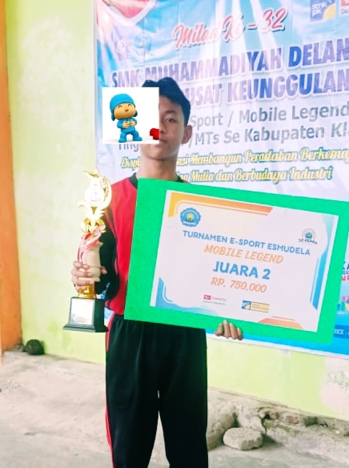
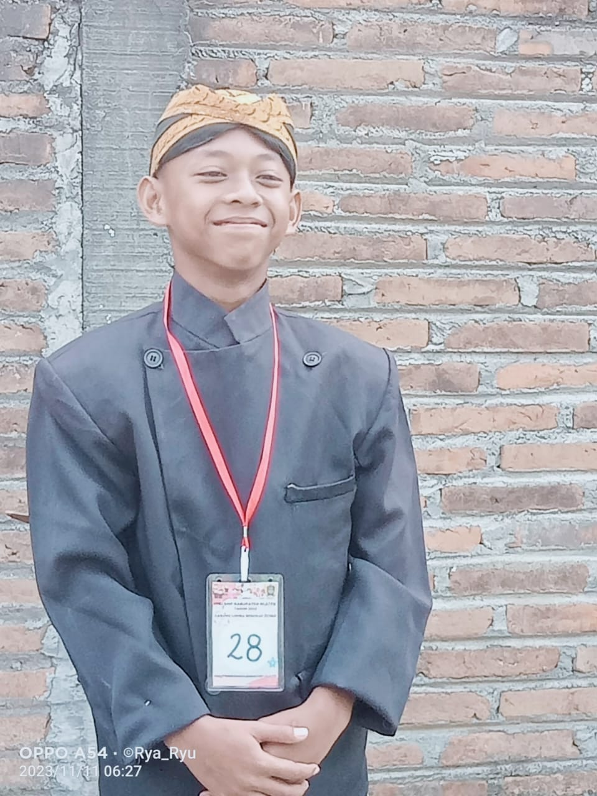
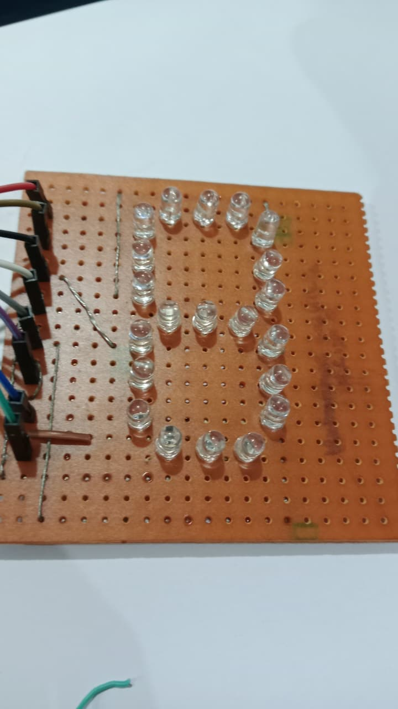

Berikut beberapa prestasi dan pengalaman yang saya miliki.

Saya berhasil menjadi runner-up atau juara 2 dalam turnamen Mobile Legends untuk pertama kalinya. Turnamen ini diselenggarakan di SMK Muhammadiyah 2 Delanggu. Pengalaman ini menjadi pencapaian yang berkesan bagi saya.

Saat kelas 8, saya mengikuti lomba sesorah atau pidato dalam bahasa Jawa. Walaupun belum berhasil menjadi juara, pengalaman ini mengajarkan saya untuk berani tampil dan menambah rasa percaya diri.

Saat kelas 10, saya mengikuti kegiatan pembuatan seven segment pada divisi IoT. Dari proyek ini, saya mendapatkan pengalaman dalam bidang elektronika dan teknologi.